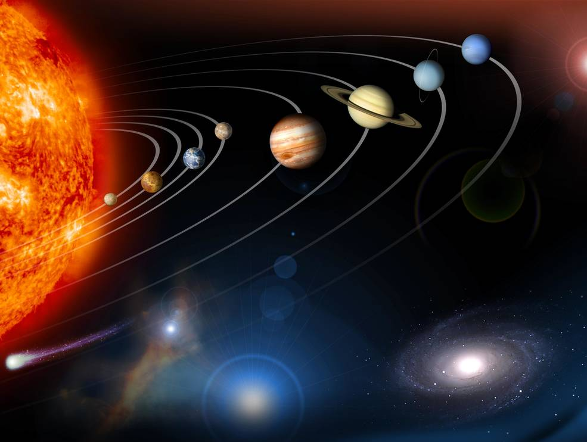
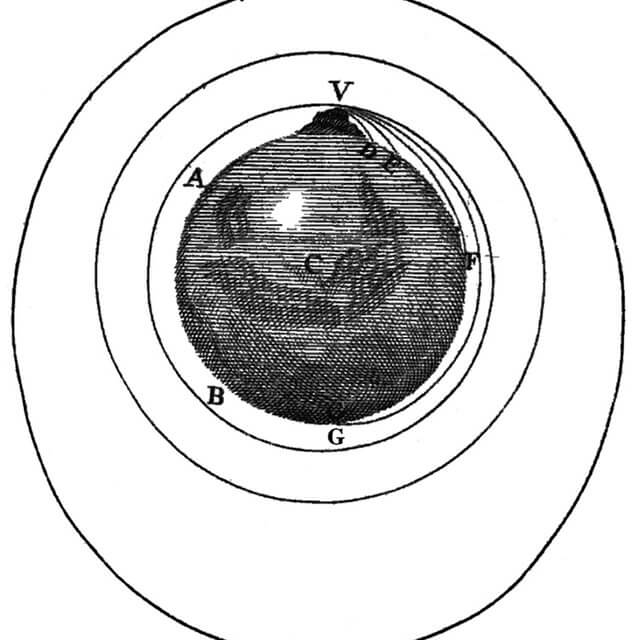

ဒီ မေးခွန်းက နေကို ကမ္ဘာက နဲ့ ဂြိုဟ်တွေ ပတ်နေတဲ့ ပြင်ညီ ပတ်လမ်းကြီးပုံကို မြင်တဲ့ သူ အတော်များများ မေးတတ်ကြတဲ့ မေးခွန်းပါ။
ဒီမေးခွန်းကို မဖြေခင် ဂြိုဟ်တွေက နေကို ပတ်နေတဲ့ ပြင်ညီကြီး မှာ အပေါ်၊ အောက်တွေ ရှိတယ် ဆိုတဲ့ အမြင်ကို အရင် ရှင်းရပါလိမ့်မယ်။ ကမ္ဘာက နေကို ပတ်တဲ့ ပုံ ဆွဲတဲ့ သူတိုင်းက ကမ္ဘာ့ မြောက်ခြမ်းကို အပေါ်ဖက်မှာ ထားပြီး ပုံဆွဲလေ့ ရှိကြပါတယ်။ ဒီတော့ ဒီ ပြင်ညီ ပုံကို မြင်တဲ့ သူတိုင်းက မြောက်ဖက်ခြမ်းက အပေါ်ဖက်၊ တောင်ဖက်ခြမ်းက အောက်ဖက် ဆိုတဲ့ အမြင် မြင်မိတတ်ကြပါတယ်။

ဒီနေရာမှာ ကမ္ဘာပေါ်မှာ အပေါ် အောက် ရယ်လို့ ဖြစ်လာပုံလေး ပြန်ကြည့်ကြည့်ရ အောင်ပါ။
ကမ္ဘာကြီးက အလုံးကြီးပါ။ ကျွန်တော်တို့ လူသားတွေက ကမ္ဘာလုံးကြီးရဲ့ ဆွဲငင်အားကြောင့် ကမ္ဘာလုံးကြီး ပေါ်မှာ ကပ်နေကြတာပါ။ ဒီတော့် ကျွန်တော်တို့ရဲ့ အောက်ဖက်သည် ကမ္ဘာမြေကြီး ဖြစ်ပြီး အပေါ်ဖက်ကတော့ အာကာသ ဟင်းလင်းပြင်ကြီး ဖြစ်ပါတယ်။ မြောက်ဝင်ရိုးစွန်းမှာ ရပ်နေတဲ့ သူအတွက် မြောက်အရပ်က မိုးကောင်းကင်ဟာ သူ့အတွက် အပေါ် ဖြစ်ပြီး တောင်ဝင်ရိုးစွန်းက လူတစ်ယောက် အတွက်တော့ တောင်ဖက်စွန်း မိုးကောင်းကင်က သူ့ အပေါ်ပါ။
ဒီတော့ ကမ္ဘာပေါ်မှာ ကျွန်တော်တို့ အတွက် အပေါ်၊ အောက် ဆိုပြီး ဖြစ်လာတာက ကမ္ဘာ့ ဆွဲအားကြောင့်ဆိုတာ ထင်ရှားပါတယ်။ ဒါဆို ကမ္ဘာကြီးကရော အာကာသ ဟင်းလင်းပြင် ကြီးထဲမှာ ပေါလောကြီး မြောနေတော့ အပေါ် အောက် ဆိုတာ မရှိတော့ဘူးလား။
မဟုတ်ပါဘူး။ ကမ္ဘာမှာလဲ အပေါ်၊ အောက် ရှိပါတယ်။ ဒါပေမယ့် ပုံတွေထဲကလို အပေါ်အောက်တော့ မဟုတ်ပါဘူး။
ကမ္ဘာကို ဆွဲထားတာက နေဖြစ်ပါတယ်။ နေရဲ့ ကြီးမားတဲ့ ဆွဲငင်အားကနေ ရုန်းမထွက် နိုင်တဲ့အတွက် ကမ္ဘာကြီးက နေကို ပတ်နေရတာ ဖြစ်ပါတယ်။ ဒီတော့ ပြောရမယ်ဆို နေသည် ကမ္ဘာကြီးရဲ့ အောက်ဖက်ပဲ ဖြစ်ပါတယ်။
လူတွေဟာ ကောင်ကင် အမြင့်က ပြုတ်ကျရင် အောက်ဖက်ဖြစ်တဲ့ ကမ္ဘာကြီးပေါ်ကို ပြုတ်ကျတယ် မဟုတ်လား။ ဒါဆို ကမ္ဘာကရော နေပေါ်ကို ဘာလို့ ပြုတ်မကျရ တာလဲ။
တကယ်က ကမ္ဘာကြီးဟာ နေပေါ်ကို ပြုတ်ကျနေပါတယ်။ တောက်လျှောက် မရပ်မနား နှစ်သန်းထောင်ချီ ကြာအောင်ကို ပြုတ်ကျ နေတာပါ။ ဒါပေမယ့် ဒီလို ပြုတ်ကျနေတဲ့ တချိန်ထဲမှာပဲ ကမ္ဘာလဲ ရှေ့ကို သွားနေတယ်လေ။ ဒီတော့ ဒီလို ရှေ့သွားတဲ့ အရှိန်နဲ့ ပြုတ်ကျတဲ့ အရှိန် နှစ်ခု ကိုက်သွားတဲ့ အခါ ပြုတ်ကျပေမယ့် နေပေါ်ကို ဘယ်တော့မှ မရောက်တော့ပါဘူး။ ရှေ့တိုးသွားလိုက်၊ ပြုတ်ကျလိုက်၊ ရှေ့တိုးသွားလိုက် ပြုတ်ကျလိုက် နဲ့ပဲ နေကိုပတ်ခြာလည်နေ ရတာ ဖြစ်ပါတယ်။
ဒါ ဘာနဲ့ တူလဲဆိုတာ့ ကမ္ဘာကို ပတ်နေတဲ့ ဂြိုဟ်တုတွေနဲ့ အလား သွားတူပါတယ်။ ကမ္ဘာပတ် လမ်းကြောင်းထဲက ဂြိုဟ်တုတွေဟာ ကမ္ဘာကို ပတ်နေရင်း ရှေ့ကို သွားနေသလို တချိန်ထဲမှာ အောက်ကိုလဲ ပြုတ်ကျ နေတာပါ။ ဒီလို ရှေ့သွားတာနဲ့ ပြုတ်ကျတာ အချိန်ကိုက် သွားတော့ ကမ္ဘာပေါ် ပြန်ကျ မလာပဲ ကမ္ဘာပတ် လမ်းကြောင်းထဲမှာ ပတ်နေနိုင်တာ ဖြစ်ပါတယ်။
ဂြိဟ်တုတွေဟာ ကမ္ဘာကို ပတ်နေရင်း တဖြည်းဖြည်း နှေးလာ ကြပါတယ်။ ဒီလို နှေးလာရင် ပြန်ပြီး အရှိန် ပြန်တင် ပေးရပါတယ်။ ဒီလိုမှ မတင်ပေးနိုင်ရင် အောက်ပြုတ်ကျတဲ့ အလျင်က ရှေ့သွားတဲ့ အလျင်နဲ့ ချိန်သား မကိုက် တော့တဲ့အတွက် ကမ္ဘာမြေ ပေါ်ကို ပြုတ်ကျလာမှာ ဖြစ်ပါတယ်။
ဒီဖြစ်စဉ်ကို ရူပဗေဒ သဘောအားဖြင့် “Free Fall” လို့ ခေါ်ပါတယ်။
ဒီ သဘောတရားကို ပထမဆုံး စပြီး တွေးခဲ့မိ သူကတော့ မြေဆွဲအား ဖေါ်မြူလာကို စတင် ဖေါ်ထုတ် နိုင်ခဲ့တဲ့ နယူတန်ပဲ ဖြစ်ပါတယ်။
သူက ကမ္ဘာပေါ်က ခပ်မြင့်မြင့် တနေရာ ကနေ အမြောက်ကျည်ဆန် တစ်တောင့်ကို ပစ်လိုက်မယ် ဆိုပြီး နမူနာ ပြပါတယ်။ ဒီအမြောက်ကျည်ကို ပစ်လိုက်ရင် ရှေ့ကို သွားသလို ကမ္ဘာမြေဆွဲအားကြောင့် အောက်ကိုလဲ ကျလာပြီး မြေကြီးပေါ် ပြုတ်ကျလာပါတယ်။ အမြောက်ကျည်ကို ပိုမြန်တဲ့ အလျင်နဲ့ ပစ်မယ်ဆို မြေကြီးပေါ် ပြုတ်မကျမီ ရှေ့ကို ပိုဝေးဝေး ရောက်မှာ ဖြစ်ပါတယ်။
သူက ဆက်တွေးရာမှာ အကယ်လို့သာ အမြောက်ကျည်ကို အရင်ထက် အများကြီး ပိုမြန်တဲ့ အလျင်နဲ့ ပစ်လိုက်မယ်ဆို မြေကြီးပေါ် မထိမီ အရင်ထက် အများကြီး ပိုဝေးတဲ့ အရပ်ထိ ရောက်မှာ ဖြစ်ပါတယ်။ အကယ်လို့သာ လုံလောက်တဲ့ အလျင်နဲ့ အမြောက်ကျည်ကို ပစ်နိုင်မယ် ဆိုရင် ဒီ အမြောက်ကျည်ဟာ အောက်ကို ကျနေပေမယ့် သူ့အလျင်က သယ်ဆောင်သွားတာမို့ ပြုတ်ကျပေမယ့် ကမ္ဘာ မြေကြီးကို ထိမှန်ခြင်း ရှိတော့မှာ မဟုတ်ပါဘူးတဲ့။ ဘာလို့ဆို ကမ္ဘာက ခုံးသွားတာမို့ အမြောက်ကျည် အောက်ပြုတ်ကျပေမယ့် ကမ္ဘာ့အခုံးကို မှီအောင် လိုက်ကျနိုင်စွမ်း မရှိတော့ လို့ပါ။

အကယ်လို့သာ နေရဲ့ ဆွဲအား မရှိလို့ ကမ္ဘာကြီးဟာ နေပေါ်ကို ပြုတ်ကျ မနေဘူး ဆိုရင် သူ့အရှိန်နဲ့သူ ဆက်သွားနေမှာ ဖြစ်တဲ့အတွက် အာကာသ ဟင်းလင်းပြင် ထဲကို လွင့်ထွက်သွားမှာ ဖြစ်ပါတယ်။
ဒီလို နေပေါ်ကို အမြဲ မရပ်မနား ပြုတ်ကျနေတာဟာ ကမ္ဘာ တစ်ခုထဲ မဟုတ်ပါဘူး။ နေအဖွဲ့အစည်း အတွင်းက ဂြိုဟ်တွေ အားလုံး နေပေါ်ကို အမြဲ ပြုတ်ကျနေရင်း လှည့်ပတ်နေတာ ဖြစ်ပါတယ်။
ဒါဆို နေထဲကို ဘာအရာ ဝတ္ထုမှ ပြုတ်မကျ တော့ဘူးပေါ့။ ဒီလိုလဲ မဟုတ်ပါဘူး။ နေထဲကို ပြုတ်ကျလာတဲ့ ဥက္ကာပျံ ဥက္ကာခဲတွေ ဂြိုဟ်သိမ်တွေလဲ ရှိကြပါတယ်။ ဒါပေမယ့် ပြုတ်ကျသွားပြီးရင် ပူပြင်းတဲ့ နေရဲ့အပူချိန် အောက်မှာ လောင်ကျွမ်းပြီး အငွေ့ပျံ သွားကြတဲ့ အတွက် ဒီ အရာဝတ္ထုတွေဟာ လုံးဝ ပျောက်ကွယ် သွားကြပါတယ်။
ဂြိုဟ်တွေမှ နေပေါ်ကို ပြုတ်ကျနေ ကြတာ မဟုတ်ပါဘူး။ ကမ္ဘာကို ပတ်နေတဲ့ လကလဲ ကမ္ဘာပေါ်ကို တချိန်လုံး ပြုတ်ကျနေတာ ဖြစ်ပါတယ်။ ဒီလို ပြုတ်ကျနေလို့လဲ ကမ္ဘာရဲ့ ဆွဲငင်အား ကနေ လွတ်ထွက် မသွားပဲ ကမ္ဘာကို ပတ်နေနိုင်တာပါ။
ဒီလိုပဲ နေအဖွဲ့အစည်း အတွင်းက အခြား ဂြိုဟ်တွေကို ပတ်နေတဲ့ ဂြိုဟ်ရံလ တွေဟာလဲ သူတို့ ပတ်နေတဲ့ ဂြိုဟ်ပေါ်ကို တချိန်လုံး ပြုတ်ကျနေ ကြတာပါ။
ကျွန်တော်တို့ရဲ့ နေကရောဗျာ။ နေကလဲ မစ်ကီးဝေး ဂလက်ဆီ ကြီးရဲ့ အလယ်ဗဟိုကို တချိန်လုံး ပြုတ်ကျနေတာပေါ့ဗျာ။ ဒါပေမယ့် နေက ရှေ့ကိုလဲ အရှိန်နဲ့ သွားနေတာ ဆိုတော့ ကမ္ဘာက နေကို ပတ်နေ သလိုမျိုး Free Fall ဖြစ်ပြီး မစ်ကီးဝေး ဂလက်ဆီ ရဲ့ ဗဟိုကို ပတ်နေလျက်သား ဖြစ်သွား ရတာပါပဲ။ နေတင် မကပါဘူး၊ မစ်ကီးဝေး ထဲက အခြား ကြယ်တွေ အားလုံးလဲ ဂလက်ဆီ ကြီးရဲ့ အလယ်ဗဟိုကို ဗဟိုပြုပြီး ပတ်နေကြတာ ပါ။ ဒါဟာ တနည်းအား ဖြင့်တော့ မစ်ကီးဝေး ထဲက ကြယ်တွေ အားလုံးဟာ မစ်ကီးဝေး ဂလက်ဆီ ကြီးရဲ့ ဗဟိုကို တချိန်လုံး ပြုတ်ကျနေ ကြတာဖြစ်ကြောင်းပါ။
— မောင်သူရ (သိပ္ပံ) —